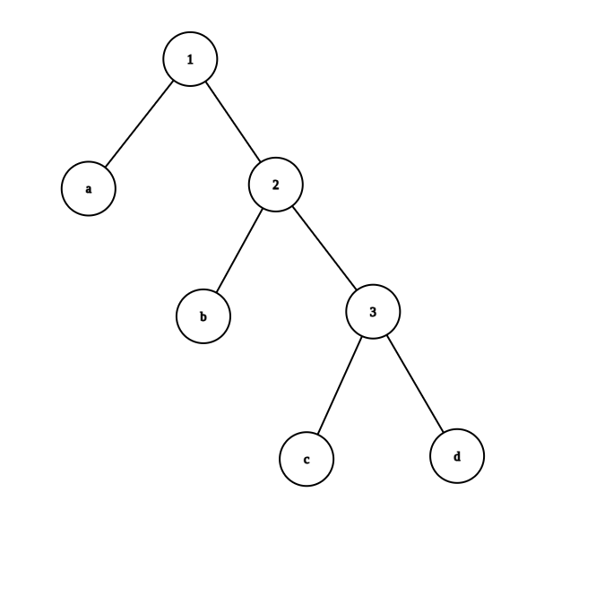

1 2 3 4 (defn make-rat [n d] (let gcd n d) nf (/ n g) df (/ d g)] (if < 0 ) (list - - (list
1 2 3 4 5 6 7 8 9 10 11 12 13 (defn make-point [x y] (list (def x-point first) (def y-point second) (defn make-segment [s t] (list (def start-segment first) (def end-segment second) (defn midpoint-segment [seg] (map + start-segment seg)) (% (end-segment seg))) 2 ) [x-point y-point])) (defn print-point [p] (prn str "(" (x-point p) ", " (y-point p) ")" )))
1 2 3 4 5 6 7 8 9 10 11 12 13 14 15 16 17 18 19 20 (defn make-rectangle [p1 p2] (list (def abs #(if < 0 ) (- (defn diff [f a b] (abs (- f a) (f b)))) (def width #(diff x-point (start-segment %) (end-segment %))) (def height #(diff y-point (start-segment %) (end-segment %))) (defn make-rectangle [p-topleft size] (list (defn size-rectangle [rect] (second (defn width [rect] (first size-rectangle rect))) (defn height [rect] (second size-rectangle rect))) (defn perimeter [rect] (* 2 (+ width rect) (height rect)))) (defn area [rect] (* width rect) (height rect)))
1 2 3 4 5 6 7 8 9 10 (defn cons [x y] #(% x y)) (defn car [z] (z (fn (car (cons (car #(% x y)) (# (% x y) (fn ((fn x (defn cdr [z] (z (fn
1 2 3 4 5 6 7 (defn cons [x y] (int * Math/pow 2 x) (Math/pow 3 y)))) (defn cdr [z] (defn iter [z result] (if = rem 3 ) 0 ) (recur 3 ) (+ 1 ))result )) (iter z 0 )) (defn car [z] (defn iter [z result] (if = rem 2 ) 0 ) (recur 2 ) (+ 1 ))result )) (iter z 0 ))
1 2 3 4 5 6 7 8 9 10 11 12 13 (add-1 zero) (fn fn f ((zero f) x)))) (fn fn f ((fn (fn fn f x))) (def one (fn fn f x)))) (add-1 one) (fn fn f ((one f) x)))) (fn fn f ((fn f x)) x)))) (fn fn f (f x)))) (def two (fn fn f (f x))))) (def + [a b] (a b))
1 2 (defn lower-bound first) (defn upper-bound second)
1 (defn sub-interval [I1 I2] (make-interval (- lower-bound I1) (upper-bound I2)) (- upper-bound I1) (lower-bound I2))))
For addition:
( l 1 , r 1 ) + ( l 2 , r 2 ) = ( l 1 + l 2 , r 1 + r 2 ) w i d t h 1 = r 1 − l 1 w i d t h 2 = r 2 − l 2 w i d t h 3 = ( r 1 + r 2 ) − ( l 1 + l 2 ) = w i d t h 1 + w i d t h 2 (l_1, r_1) + (l_2, r_2) = (l_1 + l_2, r_1 + r_2)\newline
width_1 = r_1 - l_1\newline
width_2 = r_2 - l_2\newline
width_3 = (r_1+r_2)-(l_1+l_2)=width_1+width_2\newline
( l 1 , r 1 ) + ( l 2 , r 2 ) = ( l 1 + l 2 , r 1 + r 2 ) w i d t h 1 = r 1 − l 1 w i d t h 2 = r 2 − l 2 w i d t h 3 = ( r 1 + r 2 ) − ( l 1 + l 2 ) = w i d t h 1 + w i d t h 2
For substraction:
( l 1 , r 1 ) − ( l 2 , r 2 ) = ( l 1 , r 1 ) + ( − r 2 , − l 2 ) (l_1, r_1) - (l_2, r_2) = (l_1, r_1) + (-r_2, -l_2)\newline
( l 1 , r 1 ) − ( l 2 , r 2 ) = ( l 1 , r 1 ) + ( − r 2 , − l 2 )
So this becomes addition.
For multiplication:
( 1 , 2 ) × ( 1 , 2 ) = ( 1 , 4 ) ( 1 , 2 ) × ( 3 , 4 ) = ( 3 , 8 ) (1, 2) \times (1, 2) = (1, 4)\newline
(1, 2) \times (3, 4) = (3, 8)
( 1 , 2 ) × ( 1 , 2 ) = ( 1 , 4 ) ( 1 , 2 ) × ( 3 , 4 ) = ( 3 , 8 )
All factors have width of 1, but their products’ width are not the same.
For division:
( 1 , 2 ) ÷ ( 1 , 2 ) = ( 1 2 , 2 ) ( 1 , 2 ) ÷ ( 3 , 4 ) = ( 1 4 , 2 3 ) (1, 2) \div (1,2) = (\frac12, 2)\newline
(1, 2) \div (3, 4) = (\frac14, \frac23)
( 1 , 2 ) ÷ ( 1 , 2 ) = ( 2 1 , 2 ) ( 1 , 2 ) ÷ ( 3 , 4 ) = ( 4 1 , 3 2 )
All input intervals have width of 1, but their quotients’ width are not the same.
1 2 3 (defn div-interval [x y] (if <= lower-bound y) 0 (upper-bound y)) (throw Throwable. "Divded by a interval that spans 0" ))) (mul-interval x (make-interval (/ 1.0 (upper-bound y)) (/ 1.0 (lower-bound y)))))
1 2 3 4 5 6 7 8 9 10 11 12 13 14 15 16 (defn mul-interval [x y] (cond and >= lower-bound x) 0 ) (>= lower-bound y) 0 )) (make-interval (* lower-bound x) (lower-bound y)) (* upper-bound x) (upper-bound y))) (and >= lower-bound x) 0 ) (< lower-bound y) 0 (upper-bound y))) (make-interval (* upper-bound x) (lower-bound y)) (* upper-bound x) (upper-bound y))) (and >= lower-bound x) 0 ) (<= upper-bound y) 0 )) (make-interval (* upper-bound x) (lower-bound y)) (* lower-bound x) (upper-bound y))) (and < lower-bound x) 0 (upper-bound x)) (< lower-bound y) 0 (upper-bound y))) (make-interval (max * upper-bound x) (lower-bound y)) (* lower-bound x) (upper-bound y))) (max * lower-bound x) (lower-bound y)) (* upper-bound x) (upper-bound y)))) (and < lower-bound x) 0 (upper-bound x)) (<= upper-bound y) 0 )) (make-interval (* upper-bound x) (lower-bound y)) (* lower-bound x) (lower-bound y))) (and <= upper-bound x) 0 ) (<= upper-bound y) 0 )) (make-interval (* upper-bound x) (upper-bound y)) (* lower-bound x) (lower-bound y))) :else (mul-interval y x)))
1 2 3 4 5 6 7 8 9 10 11 12 13 14 15 (defn make-center-width [c w] (make-interval (- + (defn center [i] (/ (+ lower-bound i) (upper-bound i)) 2 )) (defn width [i] (/ (- upper-bound i) (lower-bound i)) 2 )) (defn make-center-percent [c p] (make-center-width c (* (defn percent [I] (/ (width I) (center I)))
I 1 : = m a k e − c e n t e r − p e r c e n t ( c 1 , p 1 ) ( c 1 > 0 ) I 2 : = m a k e − c e n t e r − p e r c e n t ( c 2 , p 2 ) ( c 2 > 0 ) I 1 × I 2 = ( c 1 ( 1 − p 1 ) c 2 ( 1 − p 2 ) , c 1 ( 1 + p 1 ) c 2 ( 1 + p 2 ) ) = ( c 1 c 2 − ( p 1 + p 2 ) c 1 c 2 + p 1 p 2 c 1 c 2 , c 1 c 2 + ( p 1 + p 2 ) c 1 c 2 + p 1 p 2 c 1 c 2 ) c e n t e r ( I 1 × I 2 ) = c 1 c 2 + p 1 p 2 c 1 c 2 p e r c e n t ( I 1 × I 2 ) = ( p 1 + p 2 ) c 1 c 2 c 1 c 2 + p 1 p 2 c 1 c 2 ∵ p 1 < < 1 , p 2 < < 1 ∴ c e n t e r ( I 1 × I 2 ) ≈ c 1 c 2 p e r c e n t ( I 1 × I 2 ) ≈ p 1 + p 2 I_1:= make-center-percent(c_1, p_1) (c_1 > 0) \newline
I_2:= make-center-percent(c_2, p_2) (c_2 > 0) \newline
\begin{aligned}
&I_1 \times I_2 &=& (c_1(1 - p_1)c_2(1 - p_2), c_1 (1 + p_1) c_2 (1+p_2))& \\
&&=&(c_1c_2-(p_1 + p_2)c_1c_2+p_1p_2c_1c_2, c_1c_2+(p_1 + p_2)c_1c_2+p_1p_2c_1c_2)&
\end{aligned} \newline
center(I_1 \times I_2) = c_1c_2 + p_1p_2c_1c_2 \newline
percent(I_1 \times I_2) = \frac{(p_1 + p_2)c_1c_2}{c_1c_2 + p_1p_2c_1c_2} \newline
\begin {aligned}
& \because &p_1 << 1, p_2 << 1 \\
&\therefore ¢er(I_1 \times I_2) &\approx& c_1 c_2 & \\
&& percent(I_1 \times I_2) &\approx& p_1 + p_2 &
\end {aligned}
I 1 : = m a k e − c e n t e r − p e r c e n t ( c 1 , p 1 ) ( c 1 > 0 ) I 2 : = m a k e − c e n t e r − p e r c e n t ( c 2 , p 2 ) ( c 2 > 0 ) I 1 × I 2 = = ( c 1 ( 1 − p 1 ) c 2 ( 1 − p 2 ) , c 1 ( 1 + p 1 ) c 2 ( 1 + p 2 ) ) ( c 1 c 2 − ( p 1 + p 2 ) c 1 c 2 + p 1 p 2 c 1 c 2 , c 1 c 2 + ( p 1 + p 2 ) c 1 c 2 + p 1 p 2 c 1 c 2 ) c e n t e r ( I 1 × I 2 ) = c 1 c 2 + p 1 p 2 c 1 c 2 p e r c e n t ( I 1 × I 2 ) = c 1 c 2 + p 1 p 2 c 1 c 2 ( p 1 + p 2 ) c 1 c 2 ∵ ∴ p 1 < < 1 , p 2 < < 1 c e n t e r ( I 1 × I 2 ) p e r c e n t ( I 1 × I 2 ) ≈ ≈ c 1 c 2 p 1 + p 2
1 2 (defn par1 [r1 r2] (div-interval (mul-interval r1 r2) (add-interval r1 r2))) (defn par2 [r1 r2] (let make-interval 1 1 )] (div-interval one (add-interval (div-interval one r1) (div-interval one r2)))))
The error occurs because A ÷ A = ( 1 , 1 ) A \div A = (1, 1) A ÷ A = ( 1 , 1 )
Yes, she is. Avoiding the same variable invloves into the calculation twice can help us avoid the occasion in Exercise 2.14.
My first thought is that, programming is mostly engineering rather than theory.
Engineering is always bothered with the complexity of the real world, you should consider the comsumption of resources but in theory you don’t.
For example, computer can only approximate e, but in theory you just pick a sign representing it. (Space is limited, however, the information needed to represent e is infinite. )
I don’t think “to design an interval-arithmetic package that does not have this shortcoming” is possible.
As long as you use one name mutiple times to refers to some variant, the problem in 2.14 will happen.
1 2 (defn last-pair [L] (if nil? second recur rest
1 2 (defn reverse [L] (if empty? concat reverse rest list first
1 2 3 4 5 6 7 8 9 10 11 12 13 14 15 (def no-more? empty?) (def first-denomination first) (def except-first-denomination rest) (def us-coins '(50 25 10 5 1 )) (def unordered-us-coins '(25 1 50 5 10 )) (def uk-coins '(100 50 20 10 5 2 1 0.5 )) (def cc (memoize fn (cond = 0 ) 1 (or < 0 ) (no-more? coins-list)) 0 :else (+ cc amount (except-first-denomination coins-list)) (cc (- first-denomination coins-list)) coins-list)))))) (cc 100 us-coins) (cc 100 unordered-us-coins)
The order of the list coins-list doesn’t affect the answer produced by cc.
This is because the order of the coins are irrelevant to the plans to change the money.
1 2 3 4 5 6 (defn same-parity [a & args] (if empty? list (let first (if = rem - 2 ) 0 ) (concat list apply rest (apply rest
1 2 3 (defn square-list [items] (if empty? concat let first list * square-list (rest (defn square-list [items] (map *
The function cons kept pushing elemnets to the front of the array.
1 2 3 4 5 6 (def square #(* (defn square-list [items] (defn iter [things answer] (if empty? (recur rest concat list square (first (iter items '()))
This works for me… Maybe it’s only because the call to iter in Scheme gives nil as the first element in the list.
1 2 3 4 5 6 (def for-each [f col] (map nil ) (def for-each [f col] (map (defn for-each [f col] (if not empty? do f (first recur rest
Result by the interpreter : (1 (2 (3 4)))
Graphs are omited.
1 2 3 (-> 1 3 (5 7 ) 9 ) (rest rest first rest first (-> 7 )) (first first (-> 1 (2 (3 (4 (5 (6 7 )))))) (rest first rest first rest first rest first rest first rest first
1 2 3 (conj 1 2 3 ] [4 5 6 ]) (concat 1 2 3 ) '(4 5 6 )) (list 1 2 3 ) '(4 5 6 ))
1 2 (defn deep-reverse [L] (if empty? concat deep-reverse (rest list let first if list? deep-reverse a) a))))))
1 2 3 4 5 (defn fringe [n] (if empty? n (concat let first if list? fringe a) (list (fringe (rest
1 2 3 4 5 6 7 8 9 10 11 12 13 14 15 16 (def left-branch first) (def right-branch second) (def length first) (def structure second) (defn total-weight [m] (if list? + total-weight (structure (left-branch m))) (total-weight (structure (right-branch m)))) m)) (defn balanced? ([m] (>= balanced? m true ))) ([m success] (if list? (let balanced (structure (left-branch m))) br (balanced (structure (right-branch m)))] (if and >= 0 ) (>= 0 ) (= * length (left-branch m))) (* length (right-branch m))))) (+ -1 )) m)))
Only 4 functions, left-branch, right-branch, length and structure.
(Actually in the Clojure implementation there’s nothing to change.
1 2 3 4 5 (defn square-tree [n] (if list? list square-tree (first square-tree (second * (defn square-tree [n] (if list? map *
The second implementation is better, since it can deal with non-binary trees.
1 2 (defn tree-map [f n] (if node? n) (f n) (map partial
1 2 3 4 5 (defn subsets [s] (if empty? '(()) (let subsets (rest first (concat map conj
The application keeps reduce the size of a problem until it can be solve in constant time,
then merge the solutions of sub problems until we have the solution of the original problem.
1 2 3 4 5 (defn map [p sequence] (reduce conj 1 (p %2 )) [] sequence)) (defn append [seq1 seq2] (reduce conj 1 %2 ) (vec (defn length [sequence] (reduce fn inc 0 sequence))
1 2 3 (defn horner-eval [x Cs] (reduce fn + * 0 (reverse (horner-eval 2 '(1 3 0 5 0 1 ))
1 (defn count-leaves [n] (if list? reduce 0 (map 1 ))
1 2 3 (defn accumulate-n [op init seqs] (if empty? first (conj accumulate-n op init (map reduce map
1 2 3 4 5 6 7 8 9 10 11 12 (defn dot-product [v w] (reduce 0 (map (defn matrix-*-vector [m v] (map dot-product % v) m)) (defn transpose [m] (accumulate-n conj [] m)) (defn matrix*matrix [m n] (let transpose n)] (map matrix-*-vector cols %) m)))
Clojure only has fold-left, rather than fold-right.
1 2 3 4 1/3 3/2 (1 (2 (3 nil ))) (((nil 1 ) 2 ) 3 )
The result of fold-left and fold-right are the same if and only if the associative law works for the function f.
1 2 3 4 5 6 (def fold-left reduce) (defn fold-right [f init seq] (if empty? f (first fold-right f init (rest (defn reverse [seq] (fold-right #(conj 2 %1 ) [] seq)) (defn reverse [seq] (fold-left #(conj 1 %2 ) '() seq))
1 2 3 4 5 6 7 (defn unique-pairs [n] (mapcat fn map fn list range 1 (+ 1 )))) (range 1 (+ 1 )))) (defn prime? [x] (every? #(not= mod 0 ) (range 2 (+ 1 (int Math/sqrt x)))))) (defn prime-sum-pairs [n] (filter prime? (+ first second unique-pairs n)))
1 2 3 4 5 6 (defn triples-e [n] (->> unique-pairs n) (filter let second first < - (map let second first list - (defn triples-le [n] (if = 3 ) () (concat triples-le (- 1 )) (triples-e n))))
1 2 3 4 5 6 7 8 9 10 11 12 13 14 15 16 17 (def empty-board ()) (defn safe? [k positions] (let nth - 1 )) diagonal-k-1 (+ - (every? (fn let nth - 1 )) diagonal-i-1 (+ - (and not= not= not= range 1 k)))) (defn adjoin-position [new-row k rest-of-queens] (concat list (defn queens [board-size] (defn queen-cols [k] (if = 0 ) (list (->> queen-cols (- 1 )) (mapcat fn map fn adjoin-position new-row k rest-of-queens)) (range 1 (+ 1 ))))) (filter partial (queen-cols board-size))
Another version (the search algorithm), works in the positive order.
1 2 3 4 5 6 7 8 9 10 11 12 13 14 15 16 17 18 19 20 21 22 (defn queens-optimized [board-size] (defn safe? [used-diagonal-1 used-diagonal-2 cur] (let last count (not or used-diagonal-1 (+ -2 )) (used-diagonal-2 (+ - -1 )))))) (defn generate-state [used-diagonal-1 used-diagonal-2 unused cur] (let last count (list assoc + -2 ) true ) (assoc + - -1 ) true ) (disj cur))) (defn permutation [used-diagonal-1 used-diagonal-2 unused cur] (if empty? list (->> (map conj (filter partial (mapcat apply generate-state used-diagonal-1 used-diagonal-2 unused %))) ))) (let vec repeat - * 2 board-size) 1 ) false ))] (permutation initial-diagonal initial-diagonal (set (range 1 (+ 1 ))) [])))
It’s slower because:
The search algorithm wants the state to be transfered between function calls.
The search algorithm forms a tree of call stacks, while the recursive algorithm only forms a chain of call stacks.
So here you mihght see that pure recursive algorithm works better for this particular problem.
Interchanging the order of maping cause the call stacks form a tree, i.e. every queen-cols functions calls itself at least once(In the beginning it’s n times.
Estimates:
∵ ∑ i = 4 n i 2 i ( i − 1 ) ( i − 2 ) ( i − 3 ) converges. ∴ T ( n ) = O ( ∑ i = 1 n i 2 n ! i ! ) = O ( n ! ∑ i = 4 n i 2 i ( i − 1 ) ( i − 2 ) ( i − 3 ) ) = O ( n ! ) T ′ ( n ) = f ( n ) , where f ( i ) = O ( n f ( i − 1 ) ) , f ( 0 ) = O ( 1 ) T ′ ( n ) = O ( n n ) \begin {aligned}
&\because& \sum_{i=4}^n \frac{i^2}{i(i-1)(i-2)(i-3)} \text{ converges.}\\
&\therefore& T(n)=O( \sum_{i=1}^n i^2 \frac {n!}{i!}) = O(n!\sum_{i=4}^n \frac{i^2}{i(i-1)(i-2)(i-3)}) = O(n!)\\
&&T'(n)=f(n)\text{, where }f(i) = O(n f(i-1)), f(0) = O(1) \\
&&T'(n)=O(n^n) \\
\end{aligned}
∵ ∴ i = 4 ∑ n i ( i − 1 ) ( i − 2 ) ( i − 3 ) i 2 converges. T ( n ) = O ( i = 1 ∑ n i 2 i ! n ! ) = O ( n ! i = 4 ∑ n i ( i − 1 ) ( i − 2 ) ( i − 3 ) i 2 ) = O ( n ! ) T ′ ( n ) = f ( n ) , where f ( i ) = O ( n f ( i − 1 ) ) , f ( 0 ) = O ( 1 ) T ′ ( n ) = O ( n n )
Calculating the actual time difference its meaningless most of the time, since there is always a constant factor in Big O notation .
(Also I’m lazy :p)
1 2 3 4 5 6 7 8 9 10 11 12 13 14 15 16 17 18 19 20 21 22 23 24 25 26 (def empty-board ()) (defn safe? [k positions] (and (not= row-i row-k) (not= diagonal-i-1 diagonal-k-1) (not= diagonal-i-2 diagonal-k-2)))) (range 1 k)))) (defn adjoin-position [new-row k rest-of-queens] (concat list (defn queens [board-size] (defn queen-cols [k] (if = 0 ) (list (->> queen-cols (- 1 )) (mapcat fn map fn adjoin-position new-row k rest-of-queens)) (range 1 (+ 1 ))))) (filter partial (queen-cols board-size)) (defn bad-queens [board-size] (defn queen-cols [k] (if = 0 ) (list (->> range 1 (+ 1 )) (mapcat fn map fn adjoin-position new-row k rest-of-queens)) (queen-cols (- 1 ))))) (filter partial (queen-cols board-size)) (time queens 8 )) (time bad-queens 8 ))
1 2 3 4 (defn up-split [painter n] (if = 0 ) painter (let up-split painter (- 1 ))] (below painter (beside smaller smaller)))))
1 2 3 4 5 6 7 (defn split [painter n op1 op2] (if = 0 ) painter (let split painter (- 1 ) op1 op2)] (op1 painter (op2 smaller smaller))))) (def right-split beside below) (def up-split below beside)
1 2 3 4 5 6 7 (def make-vect vector) (def xcor-vect first) (def ycor-vect second) (defn add-vect [v1 v2] (make-vect (+ xcor-vect v1) (xcor-vect v2)) (+ ycor-vect v1) (ycor-vect v2)))) (defn sub-vect [v1 v2] (make-vect (- xcor-vect v1) (xcor-vect v2)) (- ycor-vect v1) (ycor-vect v2)))) (defn scale-vect [s v] (make-vect (* xcor-vect v)) (* ycor-vect v))))
Clojure doesn’t have the same cons as Scheme does.
1 2 3 4 5 6 (defn make-frame [origin edge1 edge2] (list (def origin-frame first) (def edge1-frame second) (def edge2-frame last)
1 2 3 (def make-segment list) (def start-segment first) (def end-segment second)
1 2 3 4 5 6 7 8 9 10 11 12 13 14 15 16 17 18 19 20 21 22 23 24 25 26 (defn frame-coord-map [frame] (fn add-vect (origin-frame frame) (add-vect (scale-vect (xcor-vect v) (edge1-frame frame)) (scale-vect (ycor-vect v) (edge2-frame frame)))))) (defn segments->painter [segments] (fn (doseq (draw-line ((frame-coord-map frame) (start-segment segment)) ((frame-coord-map frame) (end-segment segment)))))) (defn shape [point-list] (let count (map make-segment (nth nth mod + 1 ) cnt))) (range (defn comp-painter [painters] (fn doseq p frame)))) (def outline (shape (list make-vect 0 0 ) (make-vect 0 1 ) (make-vect 1 1 ) (make-vect 1 0 )))) (def X (list make-segment (make-vect 0 0 ) (make-vect 1 1 )) (make-segment (make-vect 0 1 ) (make-vect 1 0 )))) (def diamond (shape (list make-vect 0 1 /2 ) (make-vect 1 /2 1 ) (make-vect 1 1 /2 ) (make-vect 1 /2 0 )))) (def wave (shape (map apply (1 /3 1 ) (2 /3 1 ) (11 /14 5 /6 ) (2 /3 2 /3 ) (2 /3 7 /12 ) (11 /14 7 /12 ) (1 5 /12 ) (1 1 /3 ) (2 /3 1 /2 ) (2 /3 1 /3 ) (11 /14 0 ) (2 /3 0 ) (1 /2 1 /4 ) (1 /3 0 ) (1 /3 5 /12 ) (3 /28 1 /3 ) (0 2 /3 ) (0 5 /6 ) (3 /28 7 /12 ) (1 /3 2 /3 ) (3 /14 5 /6 ) )))) (def smile (shape (list make-vect 5 /12 5 /6 ) (make-vect 1 /2 3 /4 ) (make-vect 7 /12 5 /6 )))) (def figures {:outline outline, :X X, :diamond diamond :wave wave :smile smile}) (def painter-figures (into map vector first segments->painter (second
1 2 3 4 5 6 7 8 (defn flip-horiz [painter] (transform-painter painter (make-vect 1 0 ) (make-vect 0 0 ) (make-vect 1 1 ))) (defn rotate90 [painter] (transform-painter painter (make-vect 1 0 ) (make-vect 1 1 ) (make-vect 0 0 ))) (defn rotate180 [painter] (transform-painter painter (make-vect 1 1 ) (make-vect 0 1 ) (make-vect 1 0 )))
1 2 3 4 5 6 7 8 9 10 11 12 13 14 15 16 17 18 19 20 21 (defn rotate90 [painter] (transform-painter painter (make-vect 1 0 ) (make-vect 1 1 ) (make-vect 0 0 ))) (defn beside ([painter] (beside painter painter)) ([painter1 painter2] (let make-vect 1 /2 0 ) paint-left (transform-painter painter1 (make-vect 0 0 ) split-point (make-vect 0 1 )) paint-right (transform-painter painter2 split-point (make-vect 1 0 ) (make-vect 1 /2 1 ))] (fn paint-left frame) (paint-right frame))))) (defn below ([painter] (below painter painter)) ([painter1 painter2] (let make-vect 0 1 /2 ) paint-up (transform-painter painter1 split-point (make-vect 1 1 /2 ) (make-vect 0 1 )) paint-down (transform-painter painter2 (make-vect 0 0 ) (make-vect 1 0 ) split-point)] (fn paint-up frame) (paint-down frame))))) (defn below2 [painter1 painter2] (rotate270 (beside (rotate90 painter1) (rotate90 painter2))))
I use quil on clojure to implement everything of Chapter 2.2.4 on Github .
1 2 3 4 5 6 7 (list (list list (cdr '((x1 x2) (y1 y2))) (cadr '((x1 x2) (y1 y2))) (pair? (car '(a short list))) (memq 'red '((red shoes) (blue socks))) (memq 'red '(red shoes blue socks))
1 2 3 4 5 6 7 (defn equal-list [a b] (cond and list? list? (cond and empty? empty? true (not or empty? empty? and equal-list (first first recur rest rest :else false ) (not or list? list? = :else false ))
Actually a single = will do all the jobs for us.
' is but a macro. The reader of clojure will translate ''abracadabra into (quote (quote abracadabra)).
As a result, you’ll get (quote abracadabra).
1 2 3 4 5 6 7 8 9 10 11 12 13 14 15 16 17 18 19 20 21 22 23 24 25 26 27 28 29 30 31 32 33 34 35 36 37 38 39 (def variable? symbol?) (def same-variable? =) (defn make-sum [a1 a2] (cond = 0 ) a2 (= 0 ) a1 (and number? number? + :else (list (defn make-product [a1 a2] (cond or = 0 ) (= 0 )) 0 (= 1 ) a2 (= 1 ) a1 :else (list (defn make-exponentiation [u n] (cond or = 0 ) (= 1 )) 1 (= 1 ) u :else (list (def addend second) (def augend last) (def multiplier second) (def multiplicand last) (def base second) (def exponent last) (defn sum? [x] (and list? = first (defn product? [x] (and list? = first (defn exponentiation? [x] (and list? = first (defn deriv [exp var] (cond number? 0 (variable? exp) (if = 1 0 ) (sum? exp) (make-sum (deriv (addend exp) var) (deriv (augend exp) var)) (product? exp) (make-sum (make-product (deriv (multiplier exp) var) (multiplicand exp)) (make-product (deriv (multiplicand exp) var) (multiplier exp))) (exponentiation? exp) (make-product (make-product (exponent exp) (make-exponentiation (base exp) (make-sum (exponent exp) -1 ))) (deriv (base exp) var)) :else (throw Exception. (str "unknown expression type: DERIV" exp)))))
1 2 3 4 5 6 7 8 9 10 11 12 13 14 15 16 17 18 19 20 21 22 23 24 25 26 27 28 29 30 31 32 33 34 35 36 37 38 39 40 41 42 43 44 45 46 47 48 (def variable? symbol?) (def same-variable? =) (defn make-sum [& args] (defn insert-into-sum [col i] (cond number? assoc 0 (+ first :else (conj (let reduce 0 ] args)] (cond = count 1 ) (first (and = count 2 ) (= first 0 )) (second :else (vec concat if = first 0 ) (rest (defn make-product [& args] (defn insert-into-product [col i] (cond number? assoc 0 (* first :else (conj (if some #(= 0 ) args) 0 (let reduce 1 ] args)] (cond = count 1 ) (first (and = count 2 ) (= first 1 )) (second :else (vec concat if = first 1 ) (rest (defn make-exponentiation [u n] (cond or = 0 ) (= 1 )) 1 (= 1 ) u :else (vector (def base second) (def exponent last) (defn sum? [x] (and list? = first (defn product? [x] (and list? = first (defn exponentiation? [x] (and list? = first (defn deriv-nth-product [col var id] (apply map-indexed (fn if = deriv item var) item)) col))) (defn deriv [exp var] (cond number? 0 (variable? exp) (if = 1 0 ) (sum? exp) (apply map deriv % var) (rest (product? exp) (let - count 1 )] (apply map partial rest range - count 1 ))))) (exponentiation? exp) (make-product (make-product (exponent exp) (make-exponentiation (base exp) (make-sum (exponent exp) -1 ))) (deriv (base exp) var)) :else (throw Exception. (str "unknown expression type: DERIV" exp)))))
I’ve changed the definition of deriv here.
You can also do it without changing the definition of deriv, just change augend and multiplicand to these:
1 2 3 4 5 6 7 8 (defn drop-nth [n coll] (keep-indexed #(if not= 1 n) %2 ) coll)) (defn augend [exp] (drop-nth 1 exp)) (defn multiplicand [exp] (drop-nth 1 exp))
1 2 3 (defn infix->prefix [exp] (if or number? variable? exp)) exp (vector second infix->prefix (first infix->prefix (last
1 2 3 4 5 6 7 8 9 10 (def operators-precedence {'+ 1 , '* 2 , '** 3 }) (defn add-parentheses-to-prefix [exp] (if or number? variable? exp)) exp (let ->> (map-indexed (fn list get (filter not= second nil )) (sort-by first first (if nil? recur first (vector nth add-parentheses-to-prefix (take add-parentheses-to-prefix (drop + 1 ) exp)))))))
1 2 3 4 5 6 7 8 9 10 11 (defn element-of-set? [x set] (if = first true (and not empty? recur rest (defn adjoin-set [x set] (if element-of-set? x set) set (conj (defn union-set [s1 s2] (cond empty? (empty? :else (adjoin-set (first union-set (rest
1 2 3 4 5 6 7 8 9 10 11 12 (defn element-of-set? [x set] (if = first true (and not empty? recur rest (def ajoin-set conj) (def union-set concat) (defn intersection-set [s1 s2] (cond or empty? empty? (element-of-set? (first adjoin-set (intersection-set (rest first :else (recur rest
For no/n-duplicate implementation:
element-of-set: Θ ( n ) adjoin-set: Θ ( n ) union-set: Θ ( n 2 ) intersection-set: Θ ( n 2 ) \begin{aligned}
\text{element-of-set: }& \Theta(n)\\
\text{adjoin-set: }& \Theta(n)\\
\text{union-set: }& \Theta(n^2)\\
\text{intersection-set: }& \Theta(n^2)\\
\end{aligned}
element-of-set: adjoin-set: union-set: intersection-set: Θ ( n ) Θ ( n ) Θ ( n 2 ) Θ ( n 2 )
For duplicate implementation:
element-of-set: Θ ( n ) adjoin-set: Θ ( 1 ) union-set: Θ ( n ) intersection-set: Θ ( n ) \begin{aligned}
\text{element-of-set: }& \Theta(n)\\
\text{adjoin-set: }& \Theta(1)\\
\text{union-set: }& \Theta(n)\\
\text{intersection-set: }& \Theta(n)\\
\end{aligned}
element-of-set: adjoin-set: union-set: intersection-set: Θ ( n ) Θ ( 1 ) Θ ( n ) Θ ( n )
Actually, I won’t use the duplicate implementation in application… Why not just use list or vector?
1 2 3 4 5 6 7 8 9 10 11 (defn element-of-set? [x set] (cond empty? false (= first true (< first false :else (recur rest (defn adjoin-set [x set] (cond empty? list (= first (< first conj :else (conj adjoin-set x (rest first
This algorithm can be optimized to O ( log n ) O(\log n) O ( log n )
1 2 3 4 5 6 (defn union-set [s1 s2] (cond empty? (empty? (= first first conj union-set (rest rest first (< first first conj union-set (rest first :else (conj union-set s1 (rest first
Yes, they do.
append costs O ( n ) O(n) O ( n ) cons costs O ( 1 ) O(1) O ( 1 )
As a result, tree->list-1 is O ( n 2 ) O(n^2) O ( n 2 ) tree->list-2 is O ( n ) O(n) O ( n )
1 2 3 4 5 6 7 8 9 10 11 12 13 (defn list->tree [elements] (defn partial-tree [elts n] (if = 0 ) (list nil elts) (let quot - 1 ) 2 ) right-size (- 1 ) [left-tree non-left-elts] (partial-tree elts left-size) [cur & right-elts] non-left-elts [right-tree left-elts] (partial-tree right-elts right-size)] (list list left-elts)))) (first partial-tree elements (count (list->tree '(1 3 5 7 9 11 ))
list->tree is O ( n ) O(n) O ( n )
1 2 3 4 5 6 7 8 9 10 11 12 13 14 15 16 17 18 19 (def val first) (def L second) (def R last) (defn merge-seq [s1 s2] (cond empty? (empty? (= first first conj merge-seq (rest rest first (< first first conj merge-seq (rest first :else (conj merge-seq s1 (rest first (defn prefix->infix [t] (if nil? nil (list prefix->infix (L t)) (val prefix->infix (R t))))) (defn tree->list [t] (->> (prefix->infix ) (flatten (filter not nil? (defn union-set [s1 s2] (list->tree (merge-seq (tree->list s1) (tree->list s2))))
1 2 3 4 5 (defn lookup [given-key root] (cond nil? false (= key val (< key recur L root)) :else (recur R root))))
1 2 3 4 5 6 7 8 9 10 11 12 13 14 15 16 17 18 19 20 21 22 23 24 25 26 27 28 29 30 31 32 33 34 35 36 37 38 39 (defn leaf [symbol weight] (list (defn leaf? [x] (= first (def symbol-leaf second) (def weight last) (def L first) (def R second) (defn symbols [x] (if leaf? x) (list symbol-leaf x)) (nth 2 ))) (defn code-tree [left right] (list concat symbols left) (symbols right)) (+ weight left) (weight right)))) (defn choose-branch [bit branch] (cond = 0 ) (L branch) (= 1 ) (R branch) :else (throw Exception. (str "bad bit: CHOOSE-BRANCH `" bit "`" ))))) (defn decode [bits tree] (defn decode-1 [bits cur] (if empty? (let choose-branch (first (if leaf? next) (conj decode-1 (rest symbol-leaf next)) (recur rest (decode-1 bits tree)) (defn make-leaf-set [pairs] (->> (sort-by (map conj (def sample-tree (code-tree (leaf 'A 4 ) (code-tree (leaf 'B 2 ) (code-tree (leaf 'D 1 ) (leaf 'C 1 ))))) (def sample-message '(0 1 1 0 0 1 0 1 0 1 1 1 0 ))
1 2 3 4 5 6 7 8 9 10 11 (def encode-symbol (memoize fn (defn travel [rt cur] (if leaf? rt) (if = symbol-leaf rt) sym) cur false ) (or travel (L rt) (conj 0 )) (travel (R rt) (conj 1 ))))) (apply travel tree []))))) (defn encode [message tree] (if empty? (concat encode-symbol tree (first encode (rest
1 2 3 4 5 6 7 8 9 10 11 12 13 14 15 16 17 18 19 20 21 22 23 24 25 26 27 28 29 30 31 32 33 34 35 36 37 38 39 40 41 42 43 44 45 46 47 48 49 50 51 52 53 54 55 56 57 58 59 (ns multimap (:use [clojure.set :only (union (defn first [mm] "Get the first key-value pair in the multimap. O(log(n))" (let clojure.core/first mm)] [k (clojure.core/first vs)])) (defn rest [mm] "Get the multimap after dropping the first key-value pair. O(log(n))" (let first (del mm k v))) (defn second [mm] (first rest (defn add "Adds key-value pairs the multimap." ([mm k v] (assoc conj get ([mm k v & kvs] (apply add mm k v) kvs))) (defn del "Removes key-value pairs from the multimap." ([mm k v] (let disj get (if seq (assoc (dissoc ([mm k v & kvs] (apply del mm k v) kvs))) (defn mm-merge "Merges the multimaps, taking the union of values." [& mms] (apply partial (ns (defn successive-merge [cnt pairs] (defn iter [pairs n] (if = 0 ) (second multimap/first pairs)) (let code-tree (second multimap/first pairs)) (second multimap/second pairs))) rest-pairs (multimap/rest (multimap/rest pairs))] (recur multimap/add rest-pairs (weight new-node) new-node) (- 1 ))))) (iter pairs (- 1 ))) (defn huffman-tree [pairs] (let count (->> (make-leaf-set ) (reduce fn multimap/add cur (weight i) i)) (sorted-map (successive-merge cnt))))
1 2 3 (def dictionary (huffman-tree '((A 2 ) (NA 16 ) (BOOM 1 ) (SHA 3 ) (GET 2 ) (YIP 9 ) (JOB 2 ) (WAH 1 )))) (def message '(GET A JOB SHA NA NA NA NA NA NA NA NA GET A JOB SHA NA NA NA NA NA NA NA NA WAH YIP YIP YIP YIP YIP YIP YIP YIP YIP SHA BOOM)) (encode message dictionary)
For a fixed-length code, it would take 36 × 3 = 108 (bits) 36 \times 3 = 108 \text{(bits)} 3 6 × 3 = 1 0 8 (bits)
I just draw it for n = 2, n = 5 and n = 10 are similar.

It requires 1 bit to encode the most frequent symbol, while 2 n 2^n 2 n
It takes O ( 1 ) O(1) O ( 1 ) O ( 2 n ) O(2^n) O ( 2 n )
The code treat the exp as a general kind of data, tagged sum or product. Then it seperate the differentiation part of each implementation out of the general deriv function.
number and variable are special since they don’t act like some operation, operating on operators and operands.
Clojure requires pure functional programming, so there’s no way to “install” some modules.
1 2 3 4 5 6 7 8 9 10 11 12 13 14 15 16 17 18 19 20 21 22 23 24 25 26 27 28 29 30 31 32 33 34 35 36 37 38 39 40 41 42 43 44 45 46 47 48 49 50 51 52 53 54 55 56 57 58 59 60 61 62 63 64 65 66 67 68 69 70 71 (defn drop-nth [n coll] (keep-indexed #(if not= 1 n) %2 ) coll)) (def variable? symbol?) (def operator first) (def operands rest) (def deriv ) (defn make-sum [a1 a2] (cond = 0 ) a2 (= 0 ) a1 (and number? number? + :else (list (defn make-product [a1 a2] (cond or = 0 ) (= 0 )) 0 (= 1 ) a2 (= 1 ) a1 :else (list (defn make-exponentiation [u n] (cond or = 0 ) (= 1 )) 1 (= 1 ) u :else (list (def addend first) (defn augend [exp] (if = count 2 ) (second concat + rest (defn deriv-+ [exp var] (make-sum (deriv (addend exp) var) (deriv (augend exp) var))) (def multiplier first) (defn multiplicand [exp] (if = count 2 ) (second concat * rest (defn deriv-* [exp var] (make-sum (make-product (multiplier exp) (deriv (multiplicand exp) var)) (make-product (deriv (multiplier exp) var) (multiplicand exp)))) (def base first) (def exponent second) (defn deriv-** [exp var] (make-product (make-product (exponent exp) (make-exponentiation (base exp) (make-sum (exponent exp) -1 ))) (deriv (base exp) var))) (def ops-map { ['deriv '+] deriv-+, ['deriv '*] deriv-*, ['deriv '**] deriv-** }) (defn deriv [exp var] (cond number? 0 (variable? exp) (if = 1 0 ) :else ((get operator exp)]) (operands exp) var)))
In the example on the book, you should only change the implementation of get, put, and calls to them.
In my code you can just change the map ops-map and the calls to the function get.
1 2 3 4 5 6 7 8 9 10 11 12 13 14 15 16 17 18 19 (defn get-record "the employee's id and the file should be supplied. " ([id file] (first (for :let [cur-id (:id record)] :when (= (defn find-employee-record "The set of all files should be supplied. It should be structured like this: '(({:id Tom :salary 10} {:id Jerry :salary 100}) ({:id Alpha :salary 10} {:id Bravo :salary 100})) That is, a list of list of maps. " ([id files] (some #(get-record id %) files))) (defn get-salary [id files] (:salary (find-employee-record id files)))
Only change the function get-record.
1 2 3 4 5 6 7 8 (defn make-from-mag-ang [rho theta] (fn (cond = * Math/cos theta)) (= * Math/sin theta)) (= (= :else (throw Exception. (str "Unknown op: MAKE-FROM-MAG-ANG" op)))))) (defn apply-generic [op arg] (arg op))
For explicit dispatch:
every operation should be implement as a conditional procudure, considering different inputs.
For data-directed style:
operations on types forms a 2-dimension array, implementation of the operations are in the arrays.
For message-passing style:
The operations on a specific types should always be implemented in the definition of that type.
For a system in which new types must be often added, message-passing style is more appropriate.
For a system in which new operations must often be added, explicit dispatch is more appropriate.
This adds a interface for the complex numbers, so it works.
For the second question, my implementation differs from the one on the book (I’m using clojure).
In my implementation, I straightly call the functions in the module complex, so no apply-generic is called.
The magnitude function calls complex/magnitude, and then base/val.
See: sicp-solutions on my github.
Stack overflows, since the function keeps calling itself.
The method mentioned in the question is not good, for example, we have type a, b and c.
Let’s say a, b and c are all supertypes of some d, but there’s no way to convert between them.
If so, trying to coerce between them won’t lay out the result we want.
A proper way to solve this, might be treat the types relationships as a DAG . For each variable x to be applied by the operation,add a set on the node with the type in it, unioning the sets in the direction of the edges goes, and see whether there’s some type have all types of inputed variables.
If there is some type fullfilled the requirements, then we can coerce to that type; If not we can’t apply this method.
This is only a trivial solution. There might be better ways, but requires deeper knowledges on algorithms.
Nothing to change since ratio is treated as primitive in Clojure.
If you stick to this, we could insert some layers between complex and the under layers it relies on.